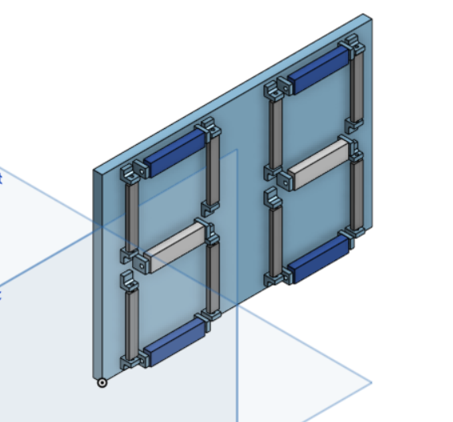
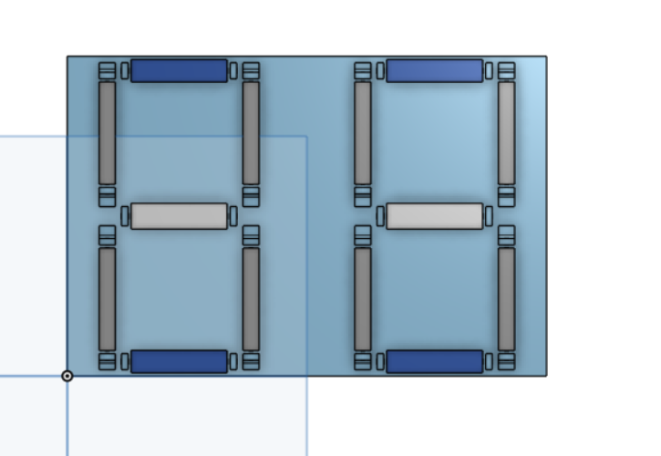
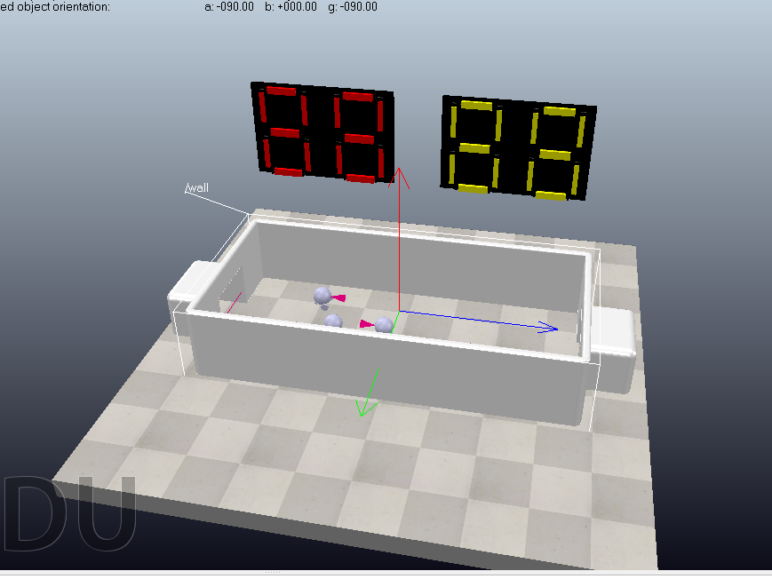
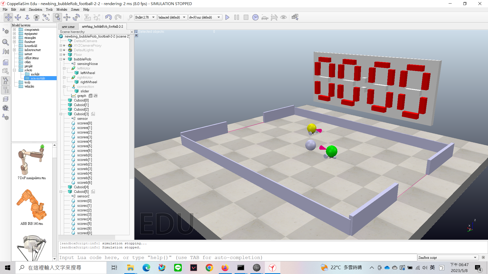

team12 <<
Previous Next >> 41023114
pj2
4/17 4人操控 bubbleRob 利用 remote API server 錄製的影片
remote API 程式
# pip install pyzmq cbor
from zmqRemoteApi import RemoteAPIClient
import keyboard
import sim
import time
import simConst
print('Program started')
sim.simxFinish(-1) # just in case, close all openㄋed connections
clientID=sim.simxStart('192.168.1.35',19997,True,True,5000,5)
sim.simxStartSimulation(clientID, sim.simx_opmode_oneshot_wait)
if clientID!=-1:
print('Connected to remote API server')
else:
print('Failed connecting to remote API server')
print('Simulation started')
errorCode, leftMotor = sim.simxGetObjectHandle(clientID, 'leftMotor', sim.simx_opmode_oneshot_wait)
errorCode, rightMotor = sim.simxGetObjectHandle(clientID, 'rightMotor', sim.simx_opmode_oneshot_wait)
def setBubbleRobVelocity(leftWheelVelocity, rightWheelVelocity):
errorCode, leftMotor = sim.simxGetObjectHandle(clientID, '/leftMotor', sim.simx_opmode_oneshot_wait)
errorCode, rightMotor = sim.simxGetObjectHandle(clientID, '/rightMotor',sim.simx_opmode_oneshot_wait)
sim.simxSetJointTargetVelocity(clientID, leftMotor, leftWheelVelocity, simConst.simx_opmode_streaming)
sim.simxSetJointTargetVelocity(clientID, rightMotor, rightWheelVelocity, simConst.simx_opmode_streaming)
'''
# Example usage 1:
setBubbleRobVelocity(1.0, 1.0)
time.sleep(2)
setBubbleRobVelocity(0.0, 0.0)
'''
# use keyborad to move BubbleRob
while True:
if keyboard.is_pressed('w'):
setBubbleRobVelocity(2.0, 2.0)
elif keyboard.is_pressed('s'):
setBubbleRobVelocity(-2.0, -2.0)
elif keyboard.is_pressed('a'):
setBubbleRobVelocity(-2.0, 2.0)
elif keyboard.is_pressed('d'):
setBubbleRobVelocity(2.0, -2.0)
elif keyboard.is_pressed('q'):
# stop simulation
sim.stopSimulation()
else:
setBubbleRobVelocity(0.0, 0.0)
控制 remote API 檔案：bubbleRob_zmq_green_red_example.7z
遇到問題：一開始本組是利用三台教室電腦及一台筆電，開始模擬時唯獨筆電無法操控 bubbleRob，後來發現網路必需都要連至同一個 Wi-Fi 才能 zmqRemoteAPI 的操控。
5/1 加入足球場景的記分板
因為在連線中，軟件中的計分板，分數無法顯示在連線的雙方的螢幕上，因此要加入的記分板，以顯示在雙方的得分數在連線的螢幕上。
經過討論本組所可執行的方案有兩種
1.利用機械式使用馬達直接傳動
2.利用程式控制顏色改變計分板分數
以下是利用機械式紀分板
機械式計分器 計分器變換方式使用馬達直接傳動
5/6 完成機械式記分板機構模型
第一版


在coppliasim中模擬放置

程式部分正在研究及討論
5/8 經過討論後機械式計分板所需程式太過繁瑣，所以參考七段顯示器的概念修改計時器為顏色控制
記分板 prt 檔及 stl 檔：score1.prt、score1_1.stl
以下是圖片效果展示

5/10 進球後可以控制個位數記分板更改分數
以下是程式註解及影片
function sysCall_init()
scorewallb = 0 -- 累計分數 b
scorewalla = 0 -- 累計分數 a
sensor = sim.getObject('./sensor') -- 感測器物件
bubbleRob = sim.getObject('/bubbleRob') -- 機器人物件
ball = sim.getObject('/ball') -- 球物件
bubbleRob2 = sim.getObject('/bubbleRob2') -- 第二個機器人物件
initialPosition = sim.getObjectPosition(bubbleRob, -1) -- 機器人的初始位置
initialOrientation = sim.getObjectOrientation(bubbleRob, -1) -- 機器人的初始姿態
initialPosition2 = sim.getObjectPosition(bubbleRob2, -1) -- 第二個機器人的初始位置
initialOrientation2 = sim.getObjectOrientation(bubbleRob2, -1) -- 第二個機器人的初始姿態
initialballPosition = sim.getObjectPosition(ball, -1) -- 球的初始位置
initialballOrientation = sim.getObjectOrientation(ball, -1) -- 球的初始姿態
-- 分數的設定
score0={1,1,1,0,1,1,1}
score1={0,0,1,0,0,1,0}
score2={1,0,1,1,1,0,1}
score3={1,0,1,1,0,1,1}
score4={0,1,1,1,0,1,0}
score5={1,1,0,1,0,1,1}
score6={1,1,0,1,1,1,1}
score7={1,0,1,0,0,1,0}
score8={1,1,1,1,1,1,1}
score9={1,1,1,1,0,1,1}
score={score0,score1,score2,score3,score4,score5,score6,score7,score8,score9}
-- 設定每個計分牆的顏色
for j = 0,6,1 do
local scoreb = sim.getObject('./scoreb['..j..']')
-- 如果 score[1][j+1] 等於 1，將計分牆設定為紅色；否則設定為白色
if (score[1][j+1]==1) then
sim.setShapeColor(scoreb, nil, sim.colorcomponent_ambient_diffuse, {1, 0, 0})
else
sim.setShapeColor(scoreb, nil, sim.colorcomponent_ambient_diffuse, {1, 1, 1})
end
end
end
function sysCall_actuation()
result=sim.readProximitySensor(sensor) -- 讀取感測器的結果
if(scorewallb<9)then
if(result>0)then
score2 = scorewallb+1 -- 更新分數
-- 判斷分數並更新計分牆的顏色
for i= 0,9,1 do
if (score2 == i)then
for j = 0,6,1 do
local scoreb = sim.getObject('./scoreb['..j..']')
-- 如果 score[i+1][j+1] 等於 1，將計分牆設定為紅色；否則設定為白色
if (score[i+1][j+1]==1) then
sim.setShapeColor(scoreb, nil, sim.colorcomponent_ambient_diffuse, {1, 0, 0})
else
sim.setShapeColor(scoreb, nil, sim.colorcomponent_ambient_diffuse, {1, 1, 1})
end
end
end
end
--sim.pauseSimulation()
scorewallb=score2 -- 更新累計分數
sim.setObjectPosition(ball, -1, initialballPosition) -- 重置球的位置
sim.setObjectOrientation(ball, -1, initialballOrientation) -- 重置球的姿態
end
else
sim.pauseSimulation() -- 暫停模擬
end
end
經過程式編譯可以更新十位數及個位數記分板分數，而以下是程式註解及影片
function sysCall_init()
scorewallb = 0 -- 分數牆B的初始分數為0
scorewalla = 0 -- 分數牆A的初始分數為0
sensor = sim.getObject('./sensor') -- 取得感應器的句柄
bubbleRob = sim.getObject('/bubbleRob') -- 取得機器人1的句柄
ball = sim.getObject('/ball') -- 取得球的句柄
bubbleRob2 = sim.getObject('/bubbleRob2') -- 取得機器人2的句柄
initialPosition = sim.getObjectPosition(bubbleRob, -1) -- 取得機器人1的初始位置
initialOrientation = sim.getObjectOrientation(bubbleRob, -1) -- 取得機器人1的初始姿態
initialPosition2 = sim.getObjectPosition(bubbleRob2, -1) -- 取得機器人2的初始位置
initialOrientation2 = sim.getObjectOrientation(bubbleRob2, -1) -- 取得機器人2的初始姿態
initialballPosition = sim.getObjectPosition(ball, -1) -- 取得球的初始位置
initialballOrientation = sim.getObjectOrientation(ball, -1) -- 取得球的初始姿態
-- 分數牆顯示的數字0~9的顏色設定
score0 = {1, 1, 1, 0, 1, 1, 1}
score1 = {0, 0, 1, 0, 0, 1, 0}
score2 = {1, 0, 1, 1, 1, 0, 1}
score3 = {1, 0, 1, 1, 0, 1, 1}
score4 = {0, 1, 1, 1, 0, 1, 0}
score5 = {1, 1, 0, 1, 0, 1, 1}
score6 = {1, 1, 0, 1, 1, 1, 1}
score7 = {1, 0, 1, 0, 0, 1, 0}
score8 = {1, 1, 1, 1, 1, 1, 1}
score9 = {1, 1, 1, 1, 0, 1, 1}
score = {score0, score1, score2, score3, score4, score5, score6, score7, score8, score9}
-- 初始化分數牆A的顯示顏色
for j = 0, 6, 1 do
local scorea = sim.getObject('./scorea[' .. j .. ']')
-- 檢查分數牆A對應的分數是否為1
if (score[1][j+1]==1) then
sim.setShapeColor(scorea, nil, sim.colorcomponent_ambient_diffuse, {1, 0, 0}) -- 將形狀的顏色設定為紅色
else
sim.setShapeColor(scorea, nil, sim.colorcomponent_ambient_diffuse, {1, 1, 1}) -- 將形狀的顏色設定為白色
end
end
-- 初始化分數牆B的顯示顏色
for j = 0, 6, 1 do
local scoreb = sim.getObject('./scoreb[' .. j .. ']')
-- 檢查分數牆B對應的分數是否為1
if (score[1][j+1]==1) then
sim.setShapeColor(scoreb, nil, sim.colorcomponent_ambient_diffuse, {1, 0, 0}) -- 將形狀的顏色設定為紅色
else
sim.setShapeColor(scoreb, nil, sim.colorcomponent_ambient_diffuse, {1, 1, 1}) -- 將形狀的顏色設定為白色
end
end
function sysCall_actuation()
result = sim.readProximitySensor(sensor) -- 讀取接近傳感器的值
-- 檢查分數牆B的分數是否小於10
if scorewallb < 10 then
-- 如果接近傳感器的值大於0，就執行以下程式
if result > 0 then
score2 = scorewallb + 1 -- 更新分數牆B的分數
-- 檢查新的分數對應的形狀顏色
for i = 0, 9, 1 do
if score2 == i then
-- 更新分數牆B的形狀顏色
for j = 0, 6, 1 do
local scoreb = sim.getObject('./scoreb[' .. j .. ']')
if score[i + 1][j + 1] == 1 then
sim.setShapeColor(scoreb, nil, sim.colorcomponent_ambient_diffuse, {1, 0, 0}) -- 將形狀的顏色設定為紅色
else
sim.setShapeColor(scoreb, nil, sim.colorcomponent_ambient_diffuse, {1, 1, 1}) -- 將形狀的顏色設定為白色
end
end
end
end
scorewallb = score2 -- 更新分數牆B的分數
sim.setObjectPosition(ball, -1, initialballPosition) -- 將球的位置重設為初始位置
sim.setObjectOrientation(ball, -1, initialballOrientation) -- 將球的方向重設為初始方向
end
else
scorewallb = 0 -- 如果分數牆B的分數達到9，則將分數牆B的分數重設為0
-- 更新分數牆B的形狀顏色
for j = 0, 6, 1 do
local scoreb = sim.getObject('./scoreb[' .. j .. ']')
if score0[j + 1] == 1 then
sim.setShapeColor(scoreb, nil, sim.colorcomponent_ambient_diffuse, {1, 0, 0}) -- 將形狀的顏色設定為紅色
else
sim.setShapeColor(scoreb, nil, sim.colorcomponent_ambient_diffuse, {1, 1, 1}) -- 將形狀的顏色設定為白色
end
end
score3 = scorewalla + 1 -- 更新分數牆A的分數
-- 更新分數牆A的形狀顏色
for i = 0, 9, 1 do
if score3 == i then
for j = 0, 6, 1 do
local scorea = sim.getObject('./scorea[' .. j .. ']')
if score[i + 1][j + 1] == 1 then
sim.setShapeColor(scorea, nil, sim.colorcomponent_ambient_diffuse, {1, 0, 0}) -- 將 scorea 物體的顏色設置為紅色
else
sim.setShapeColor(scorea, nil, sim.colorcomponent_ambient_diffuse, {1, 1, 1}) -- 將 scorea 物體的顏色設置為白色
end
end
end
end
scorewalla = score3 -- 將 scorewalla 變數的值設置為 score3 的值
sim.setObjectPosition(ball, -1, initialballPosition) -- 將 ball 物體的位置設置為初始位置
sim.setObjectOrientation(ball, -1, initialballOrientation) -- 將 ball 物體的方向設置為初始方向
-- 如果 scorewallb 和 scorewalla 都等於 9，則暫停仿真
if scorewallb == 9 and scorewalla == 9 then
sim.pauseSimulation()
end
end
team12 <<
Previous Next >> 41023114